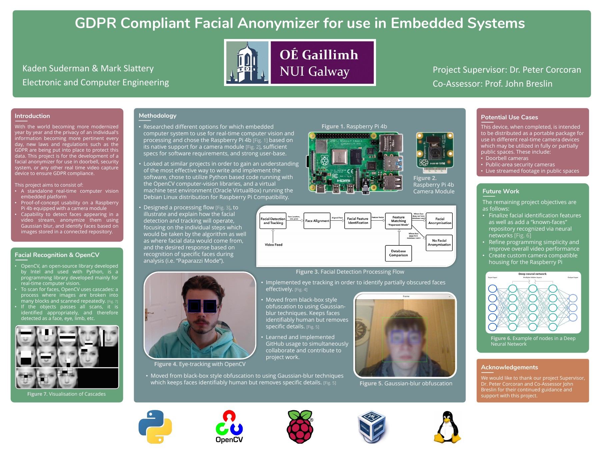

Embedded by design
The camera and inference run on a Raspberry Pi rather than depending on a cloud service, reducing both network dependence and exposure of raw footage.
Project 07 · Team project
A standalone Raspberry Pi camera pipeline that detects faces and applies Gaussian blur locally for privacy-sensitive video systems.
Project poster
The system was designed for doorbells, security cameras, and other real-time video sources where identifiable footage should not leave the device by default.

Processing path
The camera and inference run on a Raspberry Pi rather than depending on a cloud service, reducing both network dependence and exposure of raw footage.
The prototype included zones and reference-image matching so anonymization behavior could change by location or recognized identity.
This page presents the original system and poster. It does not send webcam video to a server or claim modern biometric accuracy for the 2022 cascade-based detector.
Inspect the code ↗